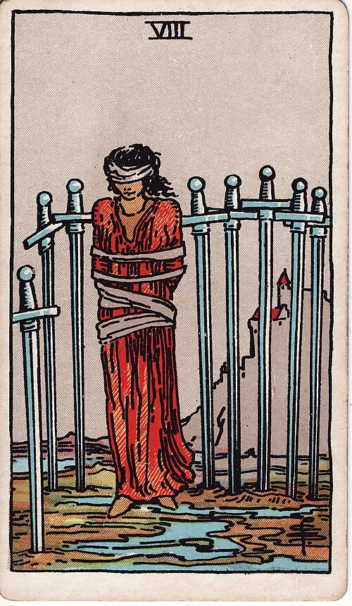

| Arcana | Minor |
| Suit | Swords |
| Element | Air |
| Attribution | Jupiter in Gemini |
Eight of Swords
In shortYou feel trapped. You are less trapped than you think.
Upright
This describes a situation that feels completely without options and is not. The constraints are real, but far looser than they look from the inside. It is a card about the stories that keep us in place — and it is not dismissive: the fear is genuine even when the door is unlocked.
Reversed
The bindings loosen. You see the way out, someone points it out, or you simply try the door. It can also intensify the upright meaning — further into the trap — so it is worth reading against the rest of the spread.
The turn
List what is actually preventing you, in one sentence each. Most will not survive the writing.
Reading with your own deck?
Sage records the cards you actually pull, writes the reading, keeps every one, and shows you what keeps returning across them. Free, private, no account.